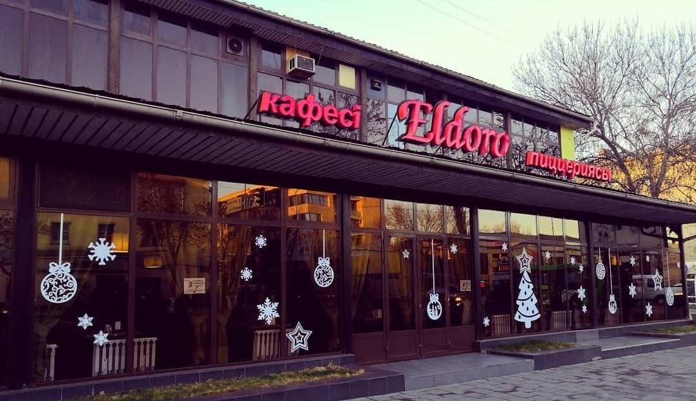

Eldoro
Eldoro – это уникальное гастрономическое путешествие в сердце Шымкента, где изысканные
вкусы встречаются с атмосферой уюта. Ресторан предлагает не только изысканное меню с
изысканными блюдами национальной и мировой кухни, но и впечатляющий интерьер, создающий
элегантную обстановку для важных событий и повседневных удовольствий. Eldoro приглашает
гостей окунуться в мир изысканных вкусов и насладиться непринужденной атмосферой, делая
каждый визит незабываемым гастрономическим опытом.
Адрес: Проспект Тауке хана, 80 | Телефон: +7‒701‒997‒09‒10
Jeti Tandyr
Jeti Tandyr в Шымкенте - это не просто чайхана, а уютное оазисное место, где каждый
посетитель
погружается в атмосферу гостеприимства и наслаждается аутентичным вкусом восточных
угощений.
Здесь встречаются традиционные казахские блюда, приготовленные с мастерством на открытом
огне,
и уютный интерьер, наполненный ароматом свежевыпеченного лепешного хлеба. Jeti Tandyr —
это не
только место для трапезы, но и для отдыха в кругу семьи и друзей, где каждый гость
находит что-то
особенное в традиционном восточном гостеприимстве.
Адрес: Улица Еримбетова, 28/8 | Телефон: +7‒775‒623‒11‒02
Altyn
Altyn – это воплощение изысканной казахской кухни и уютной атмосферы гостеприимства.
Ресторан предлагает уникальное погружение в традиционные вкусы и культуру Казахстана,
сочетая в себе
высокое качество продуктов и оригинальные рецепты. В уютном интерьере Altyn каждый гость
сможет
насладиться аутентичными блюдами, приготовленными с любовью и тщательным вниманием к
деталям. Этот ресторан
становится не просто местом для обеда или ужина, а настоящим кулинарным путешествием,
оставляющим яркие впечатления
о вкусе и гостеприимстве Казахстана.
Адрес: Улица Нуртау, 1 | Телефон: +7‒775‒201‒22‒33
BarVilla
Ресторан Barvilla в городе Шымкент приглашает вас на захватывающее кулинарное
приключение. Здесь вы откроете для себя изысканное сочетание уникальных блюд и приятной
атмосферы. Мы гордимся нашим разнообразным меню, включающим в себя изысканные блюда как
местной, так и мировой кухни, и обеспечиваем высокий уровень сервиса для каждого гостя.
Ресторан Barvilla - это не только место для великолепного обеда или ужина, но и место,
где каждый посетитель чувствует теплую атмосферу и радушный прием.
Адрес: ул. Желтоксан, 9/2, | Телефон: +7 775 100 33 22
RichVilla
RichVilla в Шымкенте — это истинное воплощение роскоши и утонченности. Роскошный ресторан
предлагает изысканные блюда, приготовленные опытными шеф-поварами, в роскошной
обстановке.
С великолепным интерьером и первоклассным обслуживанием RichVilla становится оазисом
элегантности
в самом сердце города. От утонченных кулинарных изысков до внимательно подобранного
винного списка,
RichVilla создает уникальный опыт для ценителей качественной гастрономии.
Адрес: Улица Еримбетова, 159 | Телефон: +7‒700‒105‒00‒00
Каусар
Сеть ресторанов "Каусар" в Шымкенте приглашает гостей на захватывающее кулинарное
путешествие, предлагая
изысканные блюда и атмосферу теплого приема. Специализируясь на восточных и национальных
кулинарных традициях,
"Каусар" радует посетителей разнообразием вкусов и неповторимым стилем. Эти рестораны
становятся уютными точками
встречи для семейных обедов, дружеских посиделок и особых событий, предоставляя гармонию
восточного гостеприимства
в каждом блюде.
Адрес: Проспект Динмухамеда Кунаева, 31/3 | Телефон: +7‒705‒231‒49‒17